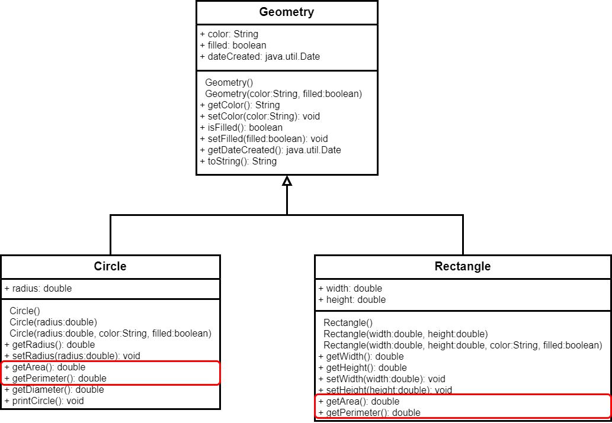
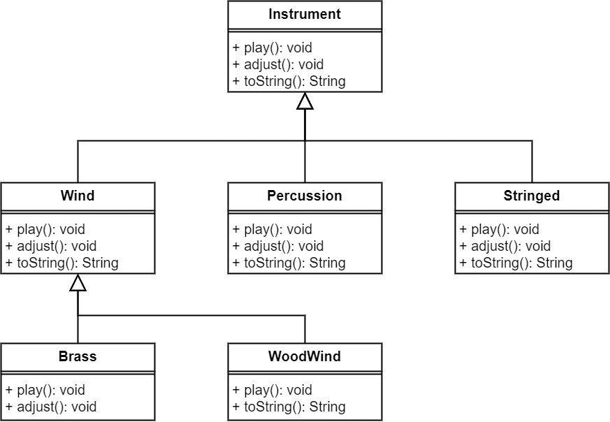

Java程序设计
第三章 面向对象基础(三)
抽象类和抽象方法
抽象类和抽象方法

抽象类和抽象方法定义
- 用abstract关键词修饰的方法是抽象方法，用abstract修饰的类是抽象类
- 抽象方法不能包含在非抽象类中
- 抽象类不能用new操作符实例化，但可定义构造方法，供其它子类的构造方法调用，如Geometry()可在Circle和Rectangle类中供调用
- 包含抽象方法的类必须是抽象类，但可定义不包含抽象方法的抽象类
- 抽象类的父类可以是具体类，不必是抽象类，如Geometry类的父类是Object
- 子类可定义覆盖父类的方法，并将子类定义为抽象类，一般很少见，往往可在当父类中实现的方法在子类中不合法时使用
- 抽象类可用作数据类型，但不能用new操作符实例化，如Geometry[] geo=new Geometry[10];就是错误的
抽象类和抽象方法示例
接口
- 接口是一种与类相似的结构，只包含常量和抽象方法
- 与抽象类相似，其目的在于指明多个对象的共同行为
- 接口作为一种特殊的类，不能使用new操作符实例化，但可以用于变量的数据类型或类型转换的结果
public interface interfaceName{
constant declarations;
method signatures;
}
接口中的修饰符
- 接口中的所有数据域都是public static final
- 接口中的所有方法都是public abstract
- 接口中的这些修饰符可以省略
public interface T1{
public static final int k=1;
public abstract void p();
}
public interface T1{
int k=1;
void p();
}
Comparable接口使用举例
- 定义在java.lang中，是用于比较两个对象的通用接口
- 当前对象与对象o的比较，若当前对象大于o则返回正数，相等则返回零，小于则返回负数
- String类实现了Comparable接口
package java.lang;
public interface Comparable{
public int compareTo(Object o);
}
Cloneable接口使用举例
- 定义在java.lang中，用于克隆当前对象
- java库中的类基本都实现了Cloneable接口，如Date, Calendar, ArrayList等
package java.lang;
public interface Cloneable{
}
protected native Object clone() throws CloneNotSupportedException;
接口和抽象类比较
| 变量 | 构造方法 | 方法 | |
|---|---|---|---|
| 抽象类 | 无限制 |
|
无限制 |
| 接口 | 所有变量都必须为public staic final |
|
所有方法都必须为public abstract |

接口和抽象类比较
- 什么情况下使用抽象类和接口？
- 抽象类，用于表示强关系，如父与子，职员与人的关系
- 接口，一般用于表明对象拥有某些属性，如人的行为
- 接口可用于实现类似多重继承的机制，即一个类只能继承一个类，但可以实现多个接口